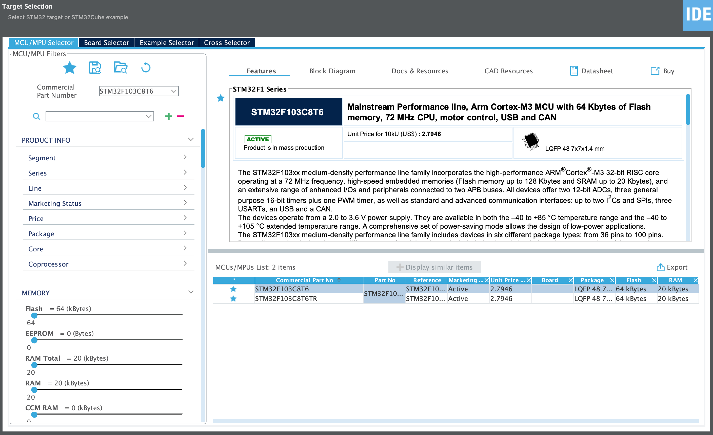

实验1指南¶
请跟随实验指南完成实验，完成文档中所有的TASK。BONUS部分的内容完成可作为加分，但报告的总分不应超过100分。请下载此指南作为实验报告模版，将填充完成的实验报告导出为PDF格式，并命名为“学号_姓名_lab1.pdf”，上传至学在浙大平台。下载请点击 这里 。
1 安装软件¶
具体见 Warm Up 。
2 连线¶
2.1 103板和ST-Link的连线¶
按照下图的对应关系，使用杜邦线将103板和ST-Link连接起来。
在ST-Link的插针处，有缺口的一侧是奇数，另一侧是偶数。
| ST-Link | STM32F103 | 线的颜色 | 含义 |
|---|---|---|---|
| (2) SWCLK | DCLK | 时钟 | |
| (4) SWDIO | DIO | 数据 | |
| (6) GND | GND | 红色 | 地 |
| (8) 3.3V | 3.3V | 黑色 | 电源 |
对特定的信号/电源使用特殊的颜色是工程和实验技术的基础要求。要求至少做到电源使用红色，地使用黑色，并且不将红色和黑色用于其他线路。
TASK1 请在这里删除给出的图片，附上你的实际拍摄的板卡连接照片，包括103板一端和ST-Link一端（10分）
TASK2 杜邦线的末端有一个开口，在连线时最好将同一排的小开口朝着同一个方向，除了美观之外还有什么作用？（5分）
在使用上述方式连接时，103板子的供电全部来自ST-Link。但ST-Link内部3.3V的电压只能供给大约50mA的电流。因此这种方式只适用于烧录程序以及不接其他模块时的简单调试场合。在实际工作时，应使用USB插座或其他外部电源直接给5V或3.3V引脚供电
2.2 按钮的连接¶
此步骤也可在 点灯 代码填充完毕并成功编译运行之后完成。
2.2.1 按钮介绍¶
按键是一种常见的输入设备，它可以用来控制系统的运行状态。在本实验中，我们将使用一个按键来控制LED的亮灭。
按键的原理是：当按键被按下时，按键与地之间的电路闭合，此时按键的引脚电压为低电平。当按键松开时，按键与地之间的电路断开，此时按键的引脚电压为高电平。
注意图中下方的按钮是如何插到面包板上的，它跨了23和25两列。当按钮被按下时，它把这两列连接了起来。
2.2.2 面包板介绍¶
电路会不断变化，所以需要一个底座——一个能把元件固定住然后连线的东西。这就是这个伟大的工具——面包板。面包板是一块塑料板，上面有一排排的内部连接着的插孔（只是不能用来切面包😂）。面包板有各种尺寸、形状和颜色，如下图所示：
运用面包板的关键，是了解这些插孔在内部是如何连接的——短的列连不连、边上的长条连不连、中间连不连。不同的板子的连接是有所不同的。
下图所示的面包板，垂直一列的五个孔是连接的，但是水平方向上不同的列是绝缘的。如果在一列的两个孔里插两条线各自的一个头，那么这两条线就是连接着的了。同样的道理，上下的两行是水平连接的。因为电路都需要连接到电源和地，这些水平长条就很适合用做电源和地。一般将上方的水平条用作电源，而下方的用作地。

通常出现在板子两侧的水平长条，并不是整条连接在一起的，中间有断开的地方，需要小心找出来。
2.2.3 按钮的连线¶
首先要把103插到面包板上，以方便今后进一步连线。103可以放在面包板的最左边，USB插座朝左，这样将来需要通过USB供电的时候会比较方便。
按钮需要接成上拉的形式，见下图，此处电阻阻值为10KΩ，起到上拉的作用。
TASK3 上拉电阻的作用是什么（5分）
TASK4 请在这里删除给出的图片，附上你的实际拍摄的板卡连接照片，其中必须包含完整的按钮连线（10分）

TASK5 请画出完整的连线示意图，包括103板、ST-Link和开关，要求标记清楚需要连线的引脚（10分）
2.3 跳线帽¶
在103板上有两个黄色跳线帽：BT0和BT1。此处有上下两组插针，每组共三个，两个跳线帽应都插在 左边的两个插针 上，如下图所示。跳线帽起到将左边和中间插针连起来的作用。
103板的正确方向为主芯片面朝上，USB插座朝左，引脚文字正常可读。
在之后的操作中，若出现无法烧录的情况，跳线帽BT0可能需要拔下来插到中间和右边的插针上。这往往是由于没有 启用调试 导致的。具体操作方式见 故障排除 。
3 建立工程¶
-
建立新工程
-
启动Cube IDE，选择“Start new STM32 project”。
如果已经启动过Cube IDE，则在菜单选择“File->New->STM32 Project“。
-
-
选择设备型号
-
在“Target Selection”中的“Part Number”输入“STM32F103C8T6”进行搜索，在右边的“MCUs/MPUs List”中选择相应的设备，点击"Next"进入下一步。

-
-
工程命名和其他选项
-
在弹出的“STM32 Project”对话框中，输入工程名称，如“blink”。其余选项保持默认设置不必更改，点击Finish即可。
-
在随后出现的“Open Associated Perspective?”对话框中点击“Yes”。
-
-
下载安装所需软件包
-
这一步Cube会自动完成，稍作等待即可。
-
完成以上步骤后，CubeIDE会自动打开新建的工程，如下图所示：
4 芯片配置¶
上一步中，CubeIDE根据选择的芯片自动生成了相应的工程。但是，这个工程还不能直接用于烧录，还需要对芯片进行一些配置。
其中的".ioc"文件是CubeIDE的配置文件，在CubeIDE中，可以通过点击左侧的“System Core”来查看芯片的配置信息。在右侧的“Configuration”栏中，可以看到芯片的各个引脚的配置信息。我们可以很方便的使用CubeIDE提供的GUI界面来配置芯片。
4.1 LED引脚¶
-
选择“System Core”中的“GPIO”选项：
-
在芯片图中点击“PC13”引脚，在弹出菜单中选择
GPIO_Output。 -
在中间“Configuration”栏中，选择PC13这一项（Modify会自动勾选）。在下方的“PC13-TAMPER-RTC Configuration”中的“User Label:”中输入这个引脚的名字，如
LED。
这个“LED”将来会出现在main.h里，它构成了两个宏，在程序中可以直接使用，用来表达这个引脚。
4.2 按钮引脚¶
此步骤也可在 点灯 代码填充完毕并成功编译运行之后完成。
参考LED引脚，为按钮进行引脚配置，模式选择为GPIO_Input，命名为BTN
按钮引脚配置中可以将GPIO Pull-up/Pull-down配为Pull-up，这样可以省略上拉电阻。
TASK6 请在此处放置你的芯片配置截图，即Pinout view下的图片（5分）
4.2 时钟¶
初次使用若不对时钟进行配置，默认会使用片内RC电路构成的时钟。但此时钟的准确性和稳定性较低，在未来实验做串口通信时可能会造成通信失败。因此，这里我们选择使用外部晶振作为时钟源。
-
选择外部晶体作为时钟源
- 点击左侧栏的“System Core→RCC”
-
在中间栏“RCC Mode and Configuration”中，将“High Speed Clock(HSE)”和“Low Speed Clock(LSE)”都选择为“Crystal/Ceramic Resnoator”
-
输出时钟信号（可选）
-
勾选“Master Clock Output”，在右侧的芯片图上会出现相应的记号。PA8引脚上会输出时钟信号供示波器、频率计等用来做硬件调试。
-
-
配置时钟源
-
即使选择了外部晶体作为时钟源，默认配置的时钟来源仍然是内部HSI（主频8MHz）。需要进一步进行配置。
-
点击上方的“Clock Configuration”显示时钟配置图。在“PLL Source Mux”处选择“HSE”，使得外部晶体成为时钟源，并且使用PLL。
-
此时主频仍然为8MHz。在“*PLLMul”处，选择“X9”，在“System Clock Mux”处选择“PLLCLK”。将主频提升到72MHz。
-
此时中间“APB1 Prescaler”出现了红色。因为APB1的最高频率只能是36MHz，所以要在“APB1 Prescaler”选择“/2”，这样就把“APB1 peripheral clocks”降到36MHz了。
-
时钟图最下面还有一个“MCO source Mux”此时也是红色的，要选择“/2 PLLCLK”。
-
TASK7 请在此处放置完整的时钟配置截图，即Clock Configuration下的图片（5分）
4.3 启用调试¶
点击左侧栏的“System Core→SYS”，在中间栏“SYS Mode and Configuration”中，选择“Debug”为“Serial Wire”。选择后右侧芯片图上也会出现相应的记号。
芯片图右上角的SWDIO和SWCLK引脚就是之前连线时接的那两个引脚。
如果忘了做这个选择，一旦烧录程序进板子之后，需要用特殊的流程（见 故障排除 ）才能重新做下一次烧录。如果做了这个选择，便可以不用动硬件和连线，直接多次烧录程序。
4.4 产生代码¶
至此，实验一的所有配置完成。接下来需要保存配置文件（blink.ioc）。
-
保存配置文件后会弹出对话框： “Do you want to generate Code?”，点击“Yes”。
每次保存ioc文件后，都会询问是否要重新生成代码。因此，在对工程文件中的代码部分进行修改时，最好在注释所框定的位置中进行修改，如
/* USER CODE BEGIN... */和对应的/* USER CODE END... */之间。修改配置文件重新生成代码时，这些注释之间的代码会被安全保留。否则若代码插入位置不规范，在更改配置重新生成代码后，之前自己所写的代码可能会覆盖。 -
询问是否要切换到C/C++视图，回答Yes。
-
完成后即会出现
main.c。源码目录层级如下：
在
main.h中有如下两行宏定义：#define LED_Pin GPIO_PIN_13 #define LED_GPIO_Port GPIOC这两个宏分别对应LED所在的引脚和端口。
103的GPIO有A、B、C、D四个端口，每个端口有32个引脚。所以PC13的意思就是C端口的13号引脚。在后续实验中，可以用这两个宏，使得代码可读性更强。
TASK8 请找出main.h中BTN引脚和端口的宏定义，并参照LED宏定义对其作简要解释。（5分）
5 代码填充¶
5.1 点灯¶
5.1.1 使用TogglePin¶
在main.c中main()函数的while(1)循环中，找到/* USER CODE BEGIN 3*/，在这之后填入如下代码：
HAL_GPIO_TogglePin(LED_GPIO_Port, LED_Pin);
HAL_Delay(500);
HAL_GPIO_TogglePin函数用于翻转引脚电平。参数为引脚所在的端口和引脚。
HAL_Delay函数用于延时。参数为延时时间，单位为毫秒。这里用到了HAL（Hardware Abstraction Layer）库的函数。HAL对硬件底层进行了抽象，很好的解决了程序移植到不同型号的STM32芯片上的问题。HAL库在代码上相对标准库更加简洁，但效率可能会略微偏低。有关HAL库的使用方法可以参考 HAL手册 。
5.1.2 不使用TogglePin¶
TASK9 请在HAL库中找到其他GPIO控制函数（不使用HAL_GPIO_TogglePin）实现灯光的闪烁，将代码填写在下方（15分）
5.2 按键¶
此步骤也可在 点灯 代码填充完毕并成功编译运行之后完成。
5.2.1 按键按下时点亮，松开时熄灭¶
更改点灯中的代码，使得按下按键时，LED灯亮，松开按键时，LED灯灭。
TASK10 请在下方填写实现代码（15分）
5.2.2 点击按钮时点亮，再次点击时熄灭¶
更改点灯中的代码，使得点击按键时，LED灯亮，再次点击时，LED灯灭。
与数逻实验中的按钮相同，此处也需要实现按键防抖功能，否则按下或松开按键时，LED灯会闪烁。
TASK11 请在下方填写实现代码（15分）
6 编译下载¶
在 代码填充 中任意实现某功能后，均可进行编译运行以检验功能是否实现。
6.1 尝试编译¶
第一次编译前，先把ST-Link插上电脑的USB接口。
然后点击工具条里的绿色播放按钮，或菜单选择Run->Run。
第一次运行可能会出现下面的对话框：
暂时不需要配置，直接点击“Run”即可。
6.2 升级ST-Link固件¶
第一次运行时，通常Cube IDE会要求检查ST-Link的版本：
点击“OK”。如果发现需要升级固件，会出现如下对话框：
点击“Open in update mode“按钮，就会出现“Current Firmware：”的数据，而且下方的”Upgrade“按钮变亮了。点击”Upgrade“，就开始ST-Link的固件升级了。
ST-Link内部是一个单片机，所以可以（需要）升级程序。
升级完成，左下角出现“Upgrade successful“，就可以直接关闭这个STLinkUpgrade程序了。
6.3 下载运行¶
回到Cube IDE，再次点击运行按钮，就会再次启动编译下载的过程，直到看到：
Download verified successfully
就表明下载成功了。
此时，板上标着TST的LED就应该开始闪烁了。
7 故障排除¶
若之前烧录在板上的程序没有按照要求 启用调试 ，就会造成后续烧录失败。
解决的办法是，拔下BT0的跳线帽，把它插到右边的两个插针上，如下图：
然后按一下板上的RST按钮（黄色跳线下方）。做完这些，再回到CubeIDE上 编译下载 。下载完成后，将跳线帽插回左边的位置，再按下RST按钮，程序就运行起来了。
只要按照要求 启用调试，今后就不再需要切换BT0跳线了，也不再需要按RST按钮。
8 拓展内容¶
BONUS1 用示波器或逻辑分析仪测试LED闪烁时PC13上输出的频率（可补5分，报告总分不超过100分）
BONUS2 找出能够产生的最高的输出频率（可补5分，报告总分不超过100分）
9 讨论和心得¶
请认真填写本模块，若不填写或胡乱填写将酌情扣分，写明白真实情况即可。
请在此处填写实验过程中遇到的问题及相应的解决方式。
由于本实验为新实验，可能存在不足之处，欢迎同学们对本实验提出建议。
个人水平有限，如您发现文档中的疏漏欢迎 Issue！